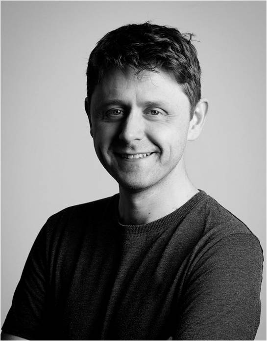
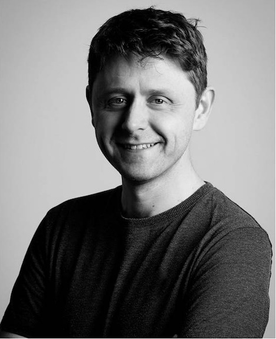

Osteopathy in Greenwich, UK
 What do you offer?
- I offer private osteopathic consultations for adults (18+) in Greenwich.
Do I need a doctor's referral to see you?
- No - you can just contact me to make a private appointment.
What is osteopathy?
- Osteopathy is a system of diagnosis & treatment for a wide range of medical conditions. It's based on the principle that well-being depends on the skeleton, muscles, ligaments & connective tissues functioning smoothly together.
- In the UK, osteopathy is designated by the NHS as an Allied Health Profession. It is regulated by the General Osteopathic Council (GOsC), with which all osteopaths must be registered.
Who & what do you treat?
- Osteopaths treat everyone but I specialise in treating adults (18+) - I don't work with children (or animals!).
- Examples of the conditions I see are low back & neck pain, shoulder problems (e.g. frozen shoulder), certain types of headaches, muscle & tendon strains (e.g. tennis elbow), joint pain (e.g. arthritic pain) & nerve problems (e.g. sciatica).
- There is limited evidence that it may help to relieve symptoms of some other conditions such as irritable bowel syndrome (IBS) & asthma.
What are your qualifications?
- I have a BSc (Hons) in osteopathy, qualifying in 2001.
- I am fully insured & am registered with the GOsC, registration number 4616.
How long is an appointment?
- As a new patient, you're with me for about 45 minutes; follow up sessions are shorter at about 20-25 minutes.
What happens in an appointment?
- After we discuss your issue, I will examine you using palpation (medical touch) & watch you doing some simple movements; I may also do some other checks, like your blood pressure.
- If appropriate, I will treat you with manual therapy. Wider management might include information, reassurance, advice & simple exercises.
- For more information about what to expect, please see the infographic.
What treatments do you use?
- I use stretching, manipulation, muscle energy technique, massage (very occasionally!) & a gentle form of osteopathic manipulation called Still Technique.
- I do not offer cranial osteopathy.
Will you give me medication for my issue?
- No - I cannot prescribe medication, though I may suggest you consult your pharmacist or GP if I think it might be helpful during your course of treatment.
How many sessions will I need?
- That depends! On average, a course of osteopathic treatment is around 4-6 sessions.
- Many simple, short-term problems often clear up quickly with self-care & little need for treatment; more persistent problems may require more sessions & a more diverse approach.
What if you can't help me?
- If I don't think your problem is appropriate for osteopathic care, we will discuss referral to another health care professional, such as your GP.
About me
- I'm an osteopath, international lecturer & clinical educator who's worked in various private, NHS & osteopathic education settings. I have a degree in history & am a (bad) poet. I'm also a full-time dad to two daughters.
I'm happy to answer any further questions when you contact me. To make an appointment, please call +44 (0) 7871 836785 or email me at jonedisosteopath@gmail.com